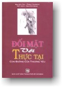

|
BuddhaSasana Home Page |
Vietnamese, with Unicode Times font |
|  |
Đối mặt với THỰC TẠI Tác
giả: PEMA CHODRON |
-ooOoo- Lời người dịch Từ xưa đến nay trong cuôc sống, hầu như bao giờ con người cũng luôn luôn đi tìm kiếm một cái gì đó. Có thể nói, sống là đấu tranh, là ước mơ, là kiếm tìm...Trong quá trình kiếm tìm của nhân loại, có nhiều người đã tìm ra được nhiều sự thật vĩ đại về con người, về vạn vật trong vũ trụ. Tất cả những công trình tìm kiếm ấy đều không ngoài một mục đích nào khác hơn là đem lại hạnh phúc cho con người. Tuy nhiên, cũng cần nhấn mạnh rằng tất cả những quá trình tìm kiếm ấy đều được thực hiện không ở đâu xa xăm hơn ngoài thế giới này, ngoài con người bé nhỏ này. Như vậy, phải chăng chân lý hay hạnh phúc thật sự hiện hữu ngay trong cuộc đời này, ngay trong thế giới và ngay trong con người tứ đại bé nhỏ này? Đối Mặt Với Thực Tại hay Con đường Của Thương Yêu được tác giả Pema Chodron viết ra bằng chính sự hiểu biết và kinh nghiệm sống của mình. Cuốn sách là những chỉ dẫn đơn giản, dễ hiểu về cách nhìn sự vật và cách sống theo giáo pháp của đức Phật, về cách thương yêu chính mình, thương yêu ngay cả những tư tưởng, tình cảm được xem là tiêu cực của chính mình để trên cơ sở đó có thể thương yêu muôn loài, muôn vật trong vũ trụ. Quả thật, cuốn sách đã đem lại một quan điểm mới trong cách sống và cách tu tập hướng đến giác ngộ. Nó khuyến khích chúng ta hãy tỉnh thức và mở lòng ra đối với tất cả các sự vật hiện tượng tâm vật lý phong phú đa dạng trong thế giới con người và vũ trụ và tu chúng sẽ dạy cho chúng ta con đưòng đi đến an vui và hạnh phúc chân thật ngay trong cuộc đời này. Với nội dung sâu sắc mang nhiều giá trị nhân bản đích thực cao cả: cuốn sách nhất định sẽ đem lại nhiều bổ ích cho cuộc sống của mỗi chúng ta. Người dịch xin trân trọng chuyển ngữ và giới thiệu cùng tất cả bạn đọc xa gần. TP. HCM, 15/04/2000 -ooOoo- |
Chân thành cám ơn anh Hồ Trung Mỹ đã gửi tặng bản vi tính (Bình Anson, 12-2003)
[Trở
về trang Thư Mục]
last updated: 27-12-2003